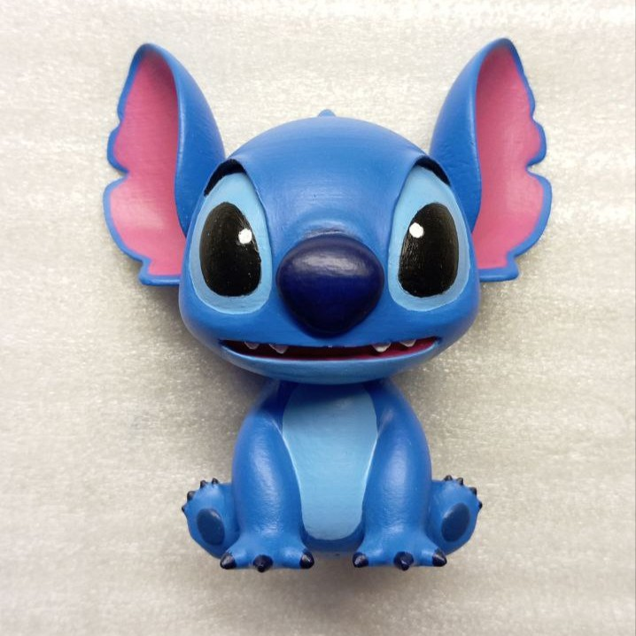
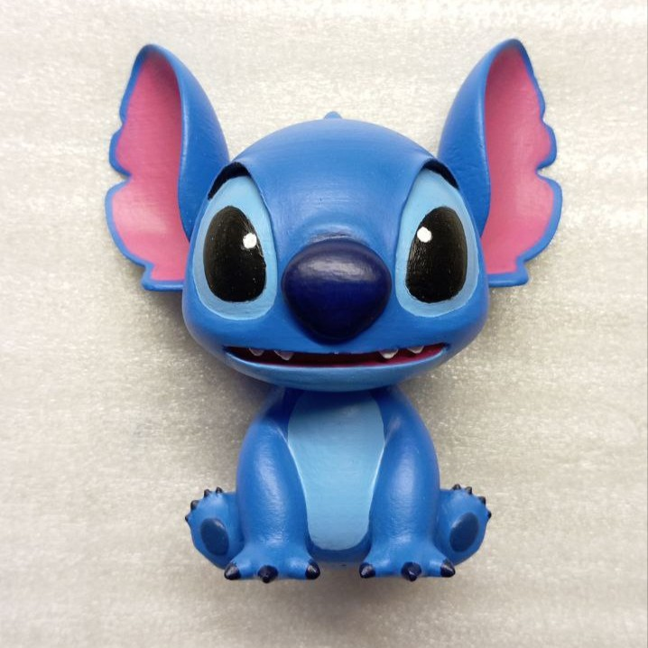
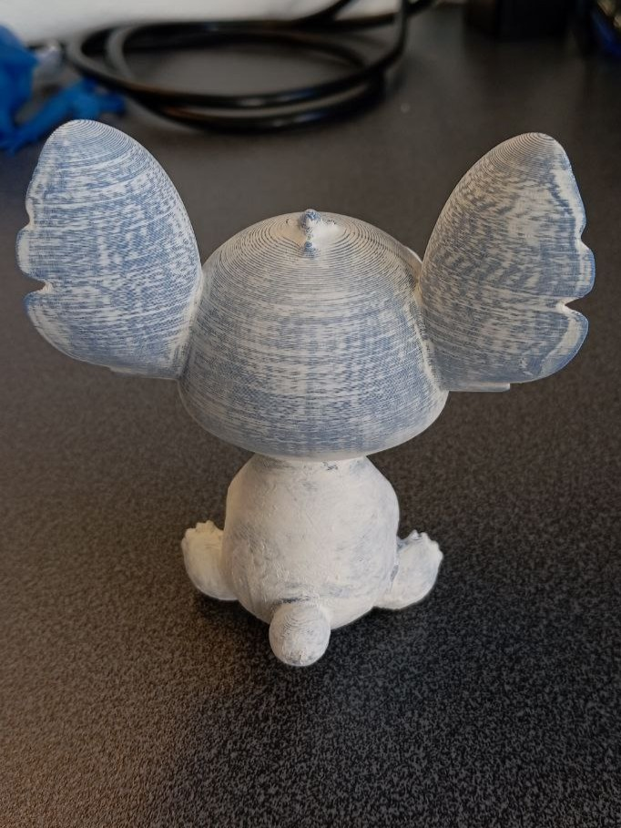
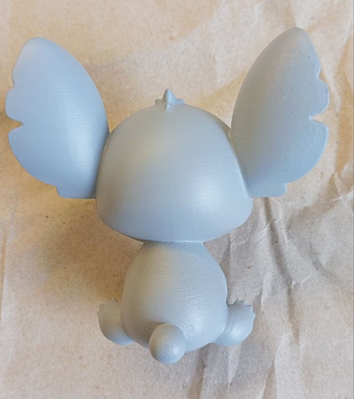
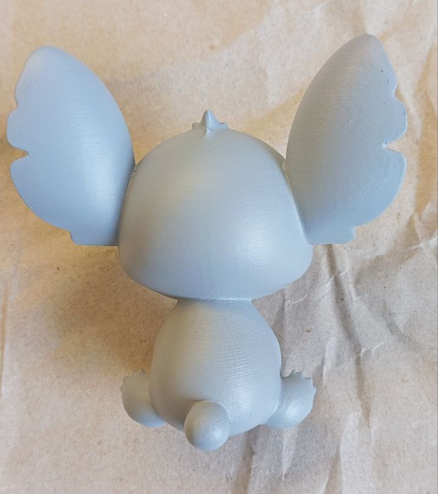

Figurine Stitch


 

Description du projet
En travaillant sur la figurine de Mita, j'ai voulu m'entraîner à la peinture, car je n'avais pas tenu de pinceaux depuis les cours d'arts plastiques à l'école. De plus, c'était récemment l'anniversaire de mon frère, alors j'ai combiné ces deux choses. Ainsi est née cette figurine de Stitch que j'ai offerte à mon frère, tout en acquérant une première expérience de peinture avant de me lancer dans une miniature plus ambitieuse.
Entre autres, cela m'a permis de maîtriser toute la technique. Je pourrais même dire qu'après ce travail, je suis capable de créer un guide complet pour réaliser ce type de miniatures avec une imprimante 3D. Techniquement, c'est ce que j'ai fait, même si je n'ai publié qu'un short monté rapidement.
Réalisation
J'ai commencé par chercher un modèle. Beaucoup ne me plaisaient pas, mais j'ai finalement trouvé celui-ci qui semblait assez simple et avait un rendu coloré facilitant la peinture.
L'impression s'est très bien passée, bien que certaines zones sous les supports aient nécessité un travail supplémentaire. J'ai utilisé du PETG bleu sur une Prusa mk3s, que j'avais reçue d'un client pour amélioration. Plus de détails dans cet autre projet.
Ensuite est venu le travail fastidieux de masticage et de ponçage. C'est l'étape qui prend le plus de temps. J'ai utilisé un mastic pour bois qui sèche rapidement, est peu coûteux, se dilue à l'eau et se travaille facilement. J'ai appliqué deux couches : une première épaisse pour combler les creux, puis une plus fine pour les imperfections. Le papier de verre allait du grain 120 à 240, donnant une surface assez lisse. J'ai cependant regretté de ne pas avoir poussé le travail plus loin.

Puis j'ai appliqué une couche d'apprêt en spray gris, bon marché mais efficace. Un seul passage a suffi, révélant quelques imperfections que j'ai choisies d'ignorer.
 

L'étape la plus intéressante : la peinture. Mes dernières expériences dataient de l'école, mais le résultat est bon. J'ai d'abord essayé des peintures bon marché qui ne couvraient pas bien, puis j'ai opté pour des peintures de meilleure qualité. Le blanc en particulier était bien plus couvrant.
La peinture proprement dite s'est bien déroulée. J'ai diffusé le processus en direct. J'ai commencé par les couleurs de base : bleu pour le corps et rose pour les oreilles. Les contours des oreilles, faits à main levée, ne sont pas parfaits mais j'ai fait de mon mieux.
J'ai ensuite ajouté les détails : le ventre bleu clair, les yeux, etc. Certaines zones résistaient à la peinture, probablement à cause de l'apprêt ou de la surface. En diluant la peinture à la consistance du lait et en laissant sécher légèrement entre les couches, j'ai obtenu un bon résultat. Le noir a nécessité plus de couches.
J'ai envisagé des techniques avancées pour ajouter du volume, mais j'ai préféré ne pas risquer de gâcher le travail.
Le motif sur le dos n'était pas visible sur la référence, j'ai donc dû chercher d'autres images. Après un croquis sur papier, je l'ai reproduit sur la figurine avec succès.
On peut voir quelques éraflures sur la queue et les poils, probablement dues au frottement contre le papier utilisé comme support.
Voici le résultat final, avant et après vernis. Le vernis, de la même marque que l'apprêt, a bien fait son travail.
Ce projet a pris un peu plus de deux semaines de travail à temps perdu, avec environ 9 heures de peinture. Pas mal pour une première fois.

Cette expérience a été très enrichissante, consolidant mes compétences du masticage à la peinture. Bien que j'aie encore progressé sur la figurine de Mita, c'est une autre histoire. La figurine a été offerte avec succès, même si la surprise a été gâchée : mon frère a vu le dernier stream de peinture.